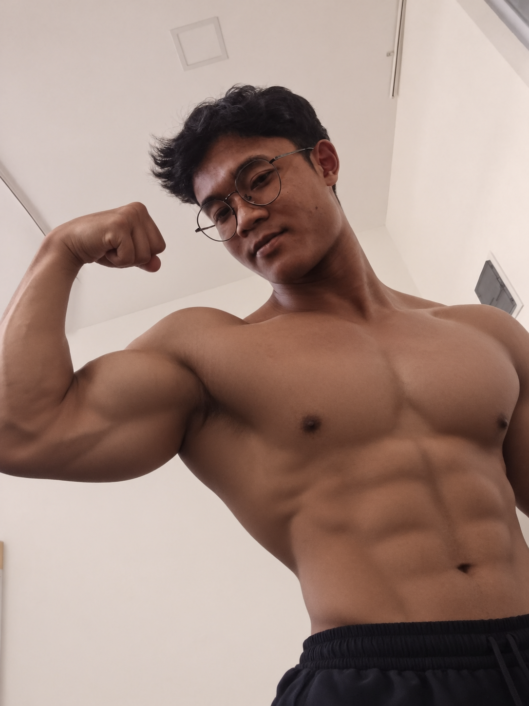
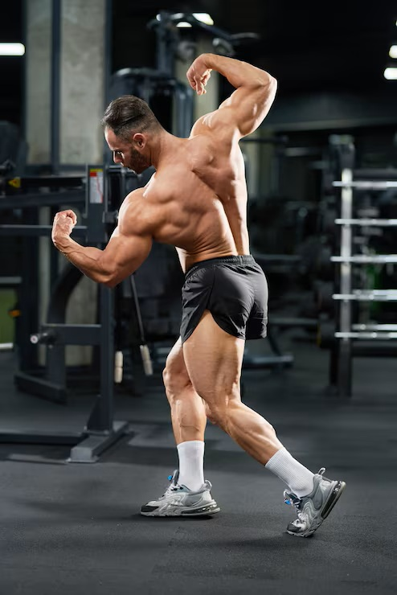
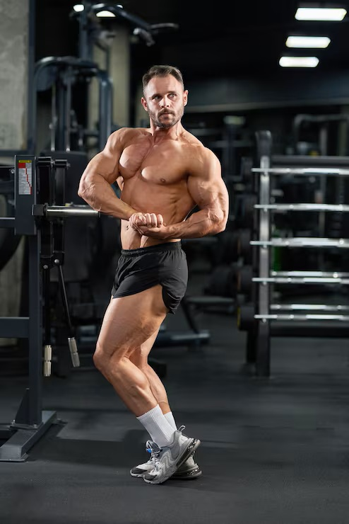
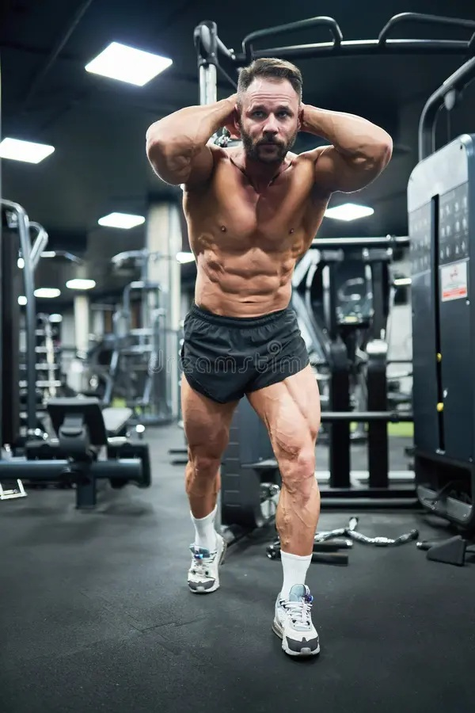

Mendapatkan bentuk tubuh yang proporsional, atletis, dan sehat tentu menjadi impian banyak orang. Di Karangasem, nama Coach Wira sudah tak asing lagi bagi para pecinta dunia kebugaran dan bodybuilding. Dengan pengalamannya melatih dan konsistensi menjaga kondisi fisik, Coach Wira membagikan kunci utama sukses membentuk otot serta menjaga stamina tetap prima.

Menurut Coach Wira, kesalahan terbanyak yang dilakukan pemula adalah terlalu berfokus pada beban berat tanpa memperhatikan teknik dasar (form) dan tempo gerakan. "Sebenarnya otot tidak tahu berapa kilo beban yang dipikul, otot hanya merespons ketegangan (tension) yang diberikan secara konsisten," ungkap Coach Wira saat ditemui di sela-sela aktivitas latihannya.
💪 4 Pilar Utama Pembentukan Otot ala Coach Wira:
- Progressive Overload: Tingkatkan beban, repetisi, atau kualitas teknik secara bertahap setiap minggunya.
- Asupan Protein Cukup: Konsumsi protein berkualitas (dada ayam, telur, tempe, ikan) untuk mempercepat perbaikan jaringan otot.
- Istirahat yang Cukup: Otot tumbuh saat tidur malam yang nyenyak (7-8 jam), bukan saat latihan di gym.
- Hidrasi & Elektrolit: Minum air putih setidaknya 3-4 liter sehari agar metabolisme sel otot berjalan optimal.



Selain faktor fisik, mentalitas disiplin juga memegang peranan 80% dari keberhasilan program transformasi tubuh. Coach Wira menekankan pentingnya memiliki growth mindset dan tidak tergiur oleh hasil instan. Hasil yang tahan lama dibangun melalui kebiasaan harian yang berkelanjutan.
Bagi warga Karangasem yang ingin memulai perjalanan kebugarannya, Coach Wira berpesan agar tidak takut melangkah. Mulailah dari latihan beban tubuh sederhana seperti push-up, squat, dan berjalan kaki sebelum beralih ke fasilitas gym lengkap.